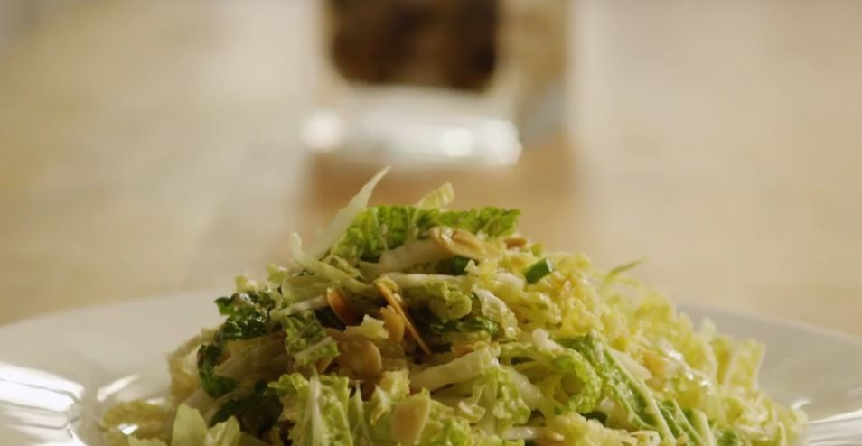

Peking cabbage has an elongated shape with crisp, juicy stalks and pale green, crisp leaves
Peking cabbage can be used raw in salads, or cooked in various ways, but it is most commonly used in fast cooking methods such as stir frying.
(source: https://www.vegetables.co.nz/vegetables-a-z/asian-greens)
click on image to go
